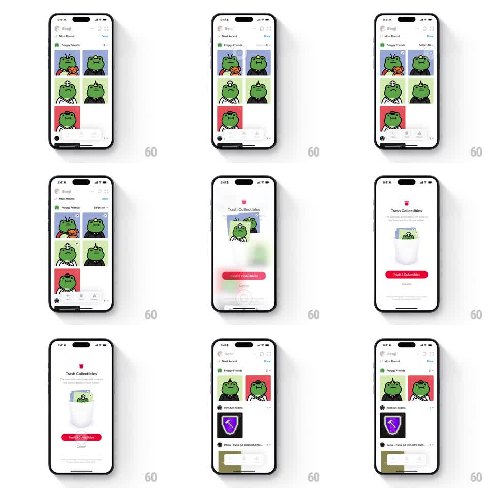

Media
Frame-by-frame

Rebuild this interaction 1:1: Family's collectibles trash flow - in the "Froggy Friends" grid, entering select mode checks frog cards, and confirming "Trash Collectibles" drops the selected cards physically into an illustrated trash can with springy physics, the can wobbling as they land, before the grid returns with the items gone.

Rebuild this interaction 1:1: Family's collectibles trash flow - in the "Froggy Friends" grid, entering select mode checks frog cards, and confirming "Trash Collectibles" drops the selected cards physically into an illustrated trash can with springy physics, the can wobbling as they land, before the grid returns with the items gone.
## Integration
Integration: stack-agnostic spec - springs given as stiffness/damping, timed motions as duration + curve; map every value to your framework and animation library of choice.
## Scene
Wallet collectibles screen ("Benji", "Froggy Friends" grid of frog NFT cards). Select mode: white check circles on cards, "Select All" right. The trash sheet: "Trash Collectibles" title, subcopy, a white illustrated trash can, a red "Trash 3 Collectibles" button, "Cancel" below. End: the grid re-renders with remaining frogs and the next section ("mint.fun base") sliding up.
## Motion spec
Pattern: skeuomorphic card drop into a trash can.
- Select mode: cards shrink slightly (scale 0.96) and check circles pop in (spring ~340/16, 40ms stagger per card); selected cards get a white border and check (120ms).
- Confirm: the sheet appears and the selected frog cards lift off the grid (scale 1 -> 0.9, 150ms), arc toward the trash can (translate along a curve, 450ms ease-in, 60ms stagger between cards), shrinking as they fall (scale -> 0.3).
- Each card tips over the rim and drops in; the can wobbles per landing (rotate +/-5deg, spring ~300/14) with a soft puff at the rim.
- The red button's count decrements as cards land ("Trash 2...", "Trash 1..."), then the sheet fades (250ms) and the grid reflows (remaining cards sliding into gaps, spring ~300/20).
## Calibration
- Cards drop one at a time - the rhythm of repeated wobbles is the comedy.
- The can is white and minimal, not cartoonish; motion carries the playfulness.
## Reduced motion
Selected cards fade out (200ms); the grid reflows without arcs.
## Don't miss
- Cards rotate slightly (10-15deg) as they arc, like tossed paper.
- The last card gets a slightly bigger wobble - a finishing beat.